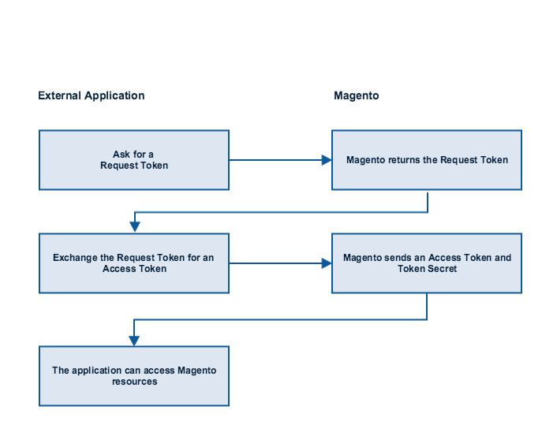

Updated: 22 June 2016 (PDT)
Magento OAuth authentication is based on OAuth 1.0a, an open standard for secure API authentication. OAuth is a token-passing mechanism that allows a system to control which external applications have access to internal data without revealing or storing any user IDs or passwords.
In Magento, a third-party extension that uses OAuth for authentication is called an integration. An integration defines which resources the extension can access. The extension can be granted access to all resources or a customized subset of resources.
As the process of registering the integration proceeds, Magento creates the tokens that the extension needs for authentication. It first creates a request token. This token is short-lived and must be exchanged for access token. Access tokens are long-lived and will not expire unless the merchant revokes access to the extension.
Contents
- OAuth overview
- Activate an integration
- 2-legged Oauth handshake
- Access the web APIs
- Generating Oauth signatures
OAuth overview
The following diagram shows the OAuth authentication process. Each step is described further. 
-
Create an integration. The merchant creates an integration from Admin. Magento generates a consumer key and a consumer secret.
-
Activate the integration. The OAuth process begins when the merchant activates the integration. Magento sends the OAuth consumer key and secret, an OAuth verifier, and the store URL to the external application via HTTPS post to the page defined in the Callback Link field in Admin. See Activate an integration for more information.
-
Process activation information. The integrator must store the activation information received in step 2. These parameters will be used to ask for tokens.
-
Call the application’s login page. Magento calls the page defined in the Identity Link field in Admin.
-
Merchant logs in to the external application. If the login is successful, the application returns to the location specified in the call. The login page is dismissed.
-
Ask for a request token. The application uses the
POST /oauth/token/requestREST API to ask for a request token. TheAuthorizationheader includes the consumer key and other information. See Get a request token for details about this token request. -
Send the request token. Magento returns a request token and request token secret.
-
Ask for an access token. The application uses the
POST /oauth/token/accessREST API to ask for an access token. TheAuthorizationheader includes the request token and other information. See Get an access token for details about this token request. -
Magento sends the access token. If this request is successful, Magento returns an access token and access token secret.
-
The application can access Magento resources. All requests sent to Magento must use the full set of request parameters in
Authorizationheader. See Access the web APIs for more information.
Activate an integration
The integration must be configured from the Magento Admin (System > Extensions > Integrations). The configuration includes a callback URL and an identity link URL. The callback URL specifies where OAuth credentials can be sent when using OAuth for token exchange. The identity link points to the login page of the third-party application that is integrating with Magento.
A merchant can choose to select Save and Activate when the integration is created. Alternatively, the merchant can click on Activate against a previously saved integration from the Integration grid.
When the integration is created, Magento generates a consumer key and a consumer secret.
Activating the integration submits the credentials to the endpoint specified when creating the Integration. An HTTP POST from Magento to the Integration endpoint will contain these attributes:
store_base_urlFor example,http://my-magento-store.com/.oauth_verifieroauth_consumer_keyoauth_consumer_key_secret
Integrations use the oauth_consumer_key key to get a request token and the oauth_verifier to get an access token.
OAuth handshake details
The process of completing the Oauth handshake requires that you
This process is known has a 2-legged OAuth handshake.
Get a request token
A request token is a temporary token that the user exchanges for an access token. Use the following API to get a request token from Magento:
POST /oauth/token/request
You must include these request parameters in the Authorization header in the call:
| Parameter | Description |
|---|---|
oauth_consumer_key |
The consumer key is generated when you create the integration. |
oauth_signature_method |
The name of the signature method used to sign the request. Must have this value: HMAC-SHA1. |
oauth_signature |
A generated value (signature). |
oauth_nonce |
A random value that is uniquely generated by the application. |
oauth_timestamp |
A positive integer, expressed in the number of seconds since January 1, 1970 00:00:00 GMT. |
oauth_version |
The OAuth version. |
The response contains these fields:
oauth_token. The token to be used when requesting an access token.oauth_token_secret. A secret value that establishes ownership of the token.
A valid response looks like this:
oauth_token=4cqw0r7vo0s5goyyqnjb72sqj3vxwr0h&oauth_token_secret=rig3x3j5a9z5j6d4ubjwyf9f1l21itrr
Get an access token
The request token must be exchanged for an access token. Use the following API to get an access token from Magento:
POST /oauth/token/access
You must include these request parameters in the Authorization header in the call:
| Parameter | Description |
|---|---|
oauth_consumer_key |
The consumer key value that you retrieve after you register the integration. |
oauth_nonce |
A random value that is uniquely generated by the application. |
oauth_signature |
A generated value (signature). |
oauth_signature_method |
The name of the signature method used to sign the request. Must have this value: HMAC-SHA1. |
oauth_timestamp |
A positive integer, expressed in the number of seconds since January 1, 1970 00:00:00 GMT. |
oauth_version |
The OAuth version. |
oauth_token |
The oauth_token value, or request token, obtained in Get a request token. |
oauth_verifier |
The verification code that is tied to the consumer and request token. It is sent as part of the initial POST operation when the integration is activated. |
A valid response looks like this:
oauth_token=0lnuajnuzeei2o8xcddii5us77xnb6v0&oauth_token_secret=1c6d2hycnir5ygf39fycs6zhtaagx8pd
The response contains these fields:
oauth_token. The access token that provides access to protected resources.oauth_token_secret. The secret that is associated with the access token.
Access the web APIs
After the Integration is authorized to make API calls, 3rd party extensions (registered as Integrations in Magento) can invoke Magento web APIs by using the access token.
To use the access token to make web API calls:
GET /rest/V1/products/1234
You must include these request parameters in the Authorization request header in the call:
oauth_consumer_key. The customer key value provided after the registration of the extension.oauth_nonce. A random value, uniquely generated by the application.oauth_signature_method. The name of the signature method used to sign the request. Valid values are:HMAC-SHA1,RSA-SHA1, andPLAINTEXT.oauth_signature. A generated value (signature).oauth_timestamp. A positive integer, expressed in the number of seconds since January 1, 1970 00:00:00 GMT.oauth_token. Theoauth_token, or access token, value obtained in Get an access token.
The OAuth signature
All OAuth handshake requests and Web Api requests include the signature as part of Authorization header. Its generated as follows:
You concatenate a set of URL-encoded attributes and parameters to construct the signature base string.
Use the ampersand (&) character to concatenate these attributes and parameters:
- HTTP method
- URL
oauth_nonceoauth_signature_methodoauth_timestampoauth_versionoauth_consumer_keyoauth_token
To generate the signature, you must use the HMAC-SHA1 signature method. The signing key is the concatenated values of the consumer secret and token secret separated by the ampersand (&) character (ASCII code 38), even if empty. You must use parameter encoding to encode each value.
Stay Connected